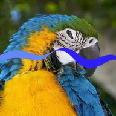

Стрічка

Малює звивисту стрічку змінної ширини по непрозорих частинах шару; анімуйте фазу, щоб стрічка текла, або вирізайте нею шар.
Налаштування
| Налаштування | Тип | Діапазон | Типово |
|---|---|---|---|
| Величина | Число | від 0 до 1 | 0.2 |
| Частота | Число | від 0.1 до 20 | 3 |
| Ширина | Число | від 0 до 5 | 0.2 |
| Фаза | Число | від 0 до 1000 | 0 |
| Зсув | Число | від -1 до 1 | 0 |
| Колір | Колір | – | #2D1EF6 |
| Вирізати | Увімкнено або вимкнено | – | Вимкнено |
| Згладжування | Число | від 0 до 1 | 0.01 |
| Тонування | Колір | – | #88CCFF |
| Інтенсивність тонування | Число | від 0% до 100% | 0% |
| Кут | Кут | від -3600° до 3600° | 0° |